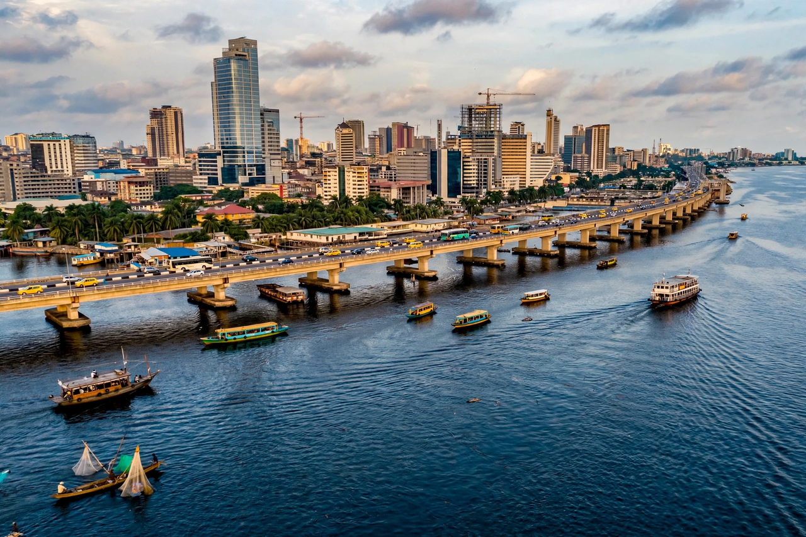

Lagos

| Country | Nigeria |
|---|---|
| State | Lagos State |
| Population | ~15–16 million (metro estimates vary widely) |
| Status | Former capital (until 1991); economic capital |
| Location | Atlantic coast, Gulf of Guinea |
| Known for | Port, commerce, Nollywood, Afrobeats |
Lagos is the largest city in Nigeria and in Africa, and the country's principal port and economic centre. It served as Nigeria's capital from independence in 1960 until 1991, when the seat of government moved to Abuja. The metropolitan population is commonly estimated at 15 million or more, though figures are disputed.
Geography
The city grew around Lagos Lagoon, where Yoruba fishing settlements — the original settlement was called Eko — were established on islands including Lagos Island, Ikoyi and Victoria Island. The urban area has since sprawled far across the mainland, through districts such as Ikeja (the state capital), Surulere, Lekki and Ajah. The Third Mainland Bridge, about 11.8 km long, links the island business districts to the mainland.
History
Portuguese explorers named the settlement Lagos after the town in Portugal in the 15th century. It became a major slave-trading port in the 18th and early 19th centuries before Britain annexed it as a colony in 1861. It was the capital of colonial and independent Nigeria, and remained the federal capital after independence until the planned capital at Abuja took over in 1991.
Economy and culture
Lagos handles the majority of Nigeria's imports through the Apapa and Tin Can Island ports, and is the centre of Nigerian banking, manufacturing and the country's film industry, Nollywood, and music scene — the city is closely associated with Fela Kuti and the rise of Afrobeats. Rapid, largely unplanned growth has produced severe traffic congestion and large informal settlements, including Makoko, a community built on stilts over the lagoon. Development projects such as Eko Atlantic, a new district being reclaimed from the Atlantic, aim to extend the city's high-value waterfront.